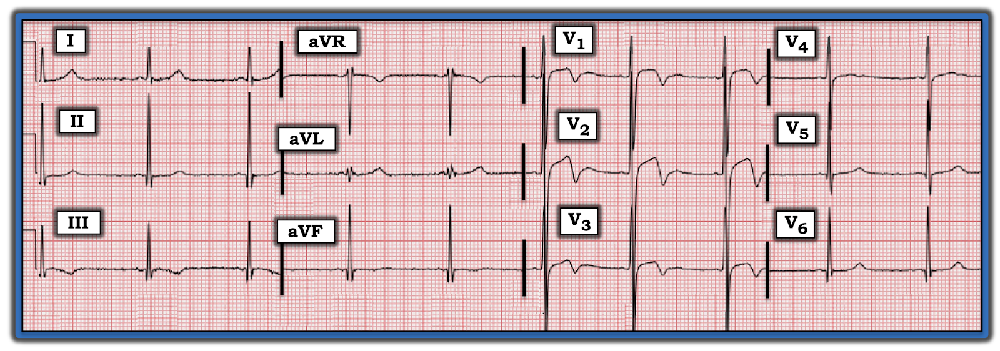
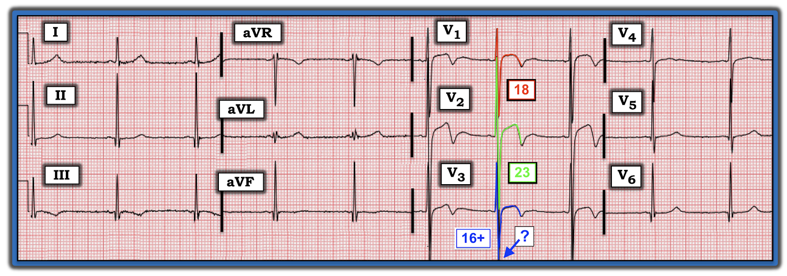

ECG Blog #254 (26a) — Hội chứng Wellens?
Điện tâm đồ trong Hình-1 được ghi ở một người đàn ông khoảng 30 tuổi, có tiền sử van động mạch chủ hai lá van. Anh ấy đến ED (khoa Cấp cứu) vì một cơn tiền ngất.
CÂU HỎI:
- Đây có phải là hội chứng Wellens (Wellens' Syndrome)?


— Ca bệnh tiếp tục BÊN DƯỚI Audio Pearl hôm nay ... —
=======================================
LƯU Ý: Đến đây, một số bạn đọc có thể muốn nghe ECG Audio PEARL dài 7:40 phút trước khi đọc Suy nghĩ của tôi về điện tâm đồ trong Hình-1. Bạn có thể tham khảo Suy nghĩ của tôi về bản ghi này bất cứ lúc nào (nằm bên dưới ECG MP-26a).
=======================================

ECG Media PEARL #26a (7:40 phút Audio) hôm nay — Ôn lại hội chứng Wellens là gì — và điều gì không phải là hội chứng này (Đây là phiên bản sửa đổi ngày 30 tháng 3 năm 2021).
Cách tiếp cận CỦA TÔI với bản ghi này:
Như thường lệ — tôi ưu tiên một Cách tiếp cận hệ thống để đọc mọi điện tâm đồ tôi gặp (Cách tiếp cận hệ thống này được ôn lại trong ECG Blog 205). Bước 1 trong việc đọc là Phân tích mô tả — tôi thấy bước này đặc biệt hữu ích để sắp xếp suy nghĩ khi gặp các bản ghi phức tạp, như điện tâm đồ trong Hình-1. Phân tích mô tả của tôi cho điện tâm đồ này như sau:
- Tần số & Nhịp: Dù không có dải nhịp dài — ta vẫn có thể nói nhịp chậm (tức ~60/phút) với khoảng R-R thay đổi nhẹ nhưng rõ ràng. Đây là loạn nhịp xoang.
- Các khoảng: Sóng P có biên độ nhỏ — nhưng có hiện diện và dương ở chuyển đạo II. Khoảng PR có vẻ hơi ngắn (tức ~0,11–0,12 giây). Phức bộ QRS không kéo dài — và QTc bình thường. LƯU Ý: Dấu hiệu đơn độc PR hơi ngắn ở một người trẻ tuổi không nhất thiết là dấu hiệu đáng lo. Cần thêm thông tin lâm sàng để đánh giá dấu hiệu này. Vì vậy — tôi thường ghi "PR ngắn — Đề nghị đối chiếu lâm sàng" trong phần diễn giải của mình. Hóa ra khoảng PR hơi ngắn này không liên quan đến ca hôm nay.
- Trục: Trục mặt phẳng trán khoảng +70 độ, là bình thường.
Lớn các buồng tim: Như đã nêu — biên độ sóng P giảm (tức không có dấu hiệu lớn nhĩ). Cũng không có dấu hiệu RVH. Đánh giá LVH (phì đại thất trái – Left Ventricular Hypertrophy) trên điện tâm đồ ở Hình-1 thì khó hơn:
- Biên độ QRS thường tăng ở người trẻ tuổi (đặc biệt ở nam giới dưới 35 tuổi). Vì vậy — khó đưa ra câu trả lời chắc chắn về việc có hay không có tiêu chuẩn điện tâm đồ của LVH ở người đàn ông khoảng 30 tuổi này.
- Dù vậy, mặc dù bệnh nhân hôm nay còn trẻ — biên độ QRS có vẻ tăng đáng kể — điều tôi minh họa bằng cách tô màu các sóng QRS chồng lên nhau ở các chuyển đạo trước (Hình-2). Biên độ QRS nhiều khả năng thỏa tiêu chuẩn điện thế của LVH vì sóng S rất sâu ở các chuyển đạo trước V1 và V2 (lần lượt 18 mm và 23 mm) — cùng với một sóng S có vẻ cực sâu ở chuyển đạo V3 (bị mép dưới của giấy cắt mất sau khi sóng S đã sâu 16 mm).
- LƯU Ý: Để biết thêm về các tiêu chuẩn điện thế LVH mà tôi ưa dùng — Xem ECG Blog #245.


Về Thay đổi Q-R-S-T:
- Có sóng Q mảnh nhưng khá sâu ở mỗi chuyển đạo thành dưới (II, III, aVF). Sóng Q mảnh cũng thấy ở các chuyển đạo trước tim bên V5, V6.
- Tăng tiến sóng R — cho thấy biên độ sóng R cao đến bất ngờ (tức 9 mm) ngay từ chuyển đạo V1 — với sóng R cực cao (hơn 20 mm) ngay từ chuyển đạo V2.
Đánh giá sóng ST-T:
- Dấu hiệu nổi bật nhất của ST-T thấy ở các chuyển đạo trước (tức các chuyển đạo V1, V2 và V3). Mỗi chuyển đạo này đều có đoạn ST dạng vòm (coving) với chênh lên nhẹ — dẫn vào sóng T đảo ngược ở phần cuối.
- Nhiều chuyển đạo còn lại có các thay đổi không đặc hiệu, kém rõ hơn, gồm ST dẹt và sóng T đảo ngược mức độ vừa ở chuyển đạo III.
- Có ST chênh lên tại điểm J ~2 mm ở V1 và V2. Sóng T ở chuyển đạo V2 hai pha với phần cuối âm.
NHẬN ĐỊNH LÂM SÀNG:
Điện tâm đồ trong ca hôm nay cho thấy loạn nhịp xoang với tần số ở ngưỡng nhịp chậm — khoảng PR hơi ngắn (~0,11–0,12 giây) — biên độ QRS tăng rõ, nhiều khả năng thỏa tiêu chuẩn điện thế của LVH (mặc dù bệnh nhân còn trẻ) — và đáp ứng ST-T rõ ràng bất thường ở các chuyển đạo trước, giống hình dạng ST-T của sóng T Wellens.
- Như đã đề cập — nhiều khả năng khoảng PR ngắn không liên quan gì đến ca hôm nay. Do biên độ sóng P rất nhỏ ở chuyển đạo II (có vẻ hơi nhỏ hơn sóng P ở chuyển đạo I) — đây có thể là nhịp nhĩ lạc chỗ, vốn có thể là một biến thể bình thường. Tùy vị trí trong tâm nhĩ nơi nhịp khởi phát — khoảng PR có thể ngắn hơn một cách bình thường (tức nếu nhịp nhĩ lạc chỗ khởi phát từ một vị trí ở nhĩ gần nút AV).
Vì sao Hội chứng Wellens Khó xảy ra ở ca hôm nay:
Tôi ôn lại những điểm cốt yếu của hội chứng Wellens trong ECG Media PEARL #26a (ở trên) hôm nay — và trong 2 Hình ở Phần bổ sung bên dưới. Tóm lại, mặc dù có các thay đổi ST-T ở thành trước giống với những gì thấy trong hội chứng Wellens — ca hôm nay khó là hội chứng Wellens. Lý do là:
- Như tôi đã nhấn mạnh khi ôn lại hội chứng Wellens — tiền sử đau ngực gần đây nay đã hết là một phần thiết yếu của chẩn đoán. Bệnh nhân trong ca hôm nay là một người trẻ tuổi (tức thuộc nhóm có tần suất bệnh mạch vành thấp hơn) — và không hề có đề cập đến tiền sử đau ngực trước đó.
- Khoảng QT có vẻ bình thường ở Hình-2. Ngược lại — trong hội chứng Wellens, QTc thường ít nhất ở mức kéo dài giới hạn.
- Biên độ sóng R ở các chuyển đạo trước tăng rõ rệt (tức sóng R ở V1 ~9 mm — và sóng R ở V2 rất lớn, tới 24 mm!). Phần lớn các ca hội chứng Wellens đi kèm biên độ sóng R ở thành trước giảm, thường kèm vùng chuyển tiếp muộn ở các chuyển đạo trước tim.
- Có điện thế đạt tiêu chuẩn LVH. Cần thận trọng khi chẩn đoán hội chứng Wellens khi biên độ QRS tăng rõ — vì tình trạng này có xu hướng gây kết quả dương tính giả.
- Nhìn chung — Hình ảnh điện tâm đồ gồm điện thế tăng, vùng chuyển tiếp sớm và các thay đổi ST-T tương tự như ở Hình-2 thường gặp dưới dạng biến thể tái cực ở người trẻ tuổi. Bằng loại trừ — theo dõi ca hôm nay cho thấy đây (chứ không phải hội chứng Wellens) là lời giải thích cho các dấu hiệu điện tâm đồ ở Hình-1. Vậy thì CÓ — Rõ ràng bệnh nhân này cần được đánh giá, vì hình ảnh điện tâm đồ ở Hình-1 có thể phù hợp với LVH hoặc HCM (bệnh cơ tim phì đại – Hypertrophic CardioMyopathy) — Nhưng siêu âm tim cho thấy không có LVH cũng không có HCM.
==================================
==================================
PHẦN BỔ SUNG (ngày 1 tháng 10 năm 2021): Trong 2 Hình sau — tôi đăng phần tóm tắt viết từ cuốn ECG-2014-ePub của tôi về hội chứng Wellens.
- BẤM VÀO ĐÂY — để tải bản PDF của tệp 3 trang về hội chứng Wellens xuất hiện trong Hình-3 và Hình-4.


==============================
Lời cảm ơn: Xin cảm ơn Ghady Rahhal (từ Virginia, Hoa Kỳ) đã chia sẻ ca bệnh và bản ghi này.
==================================
Các bài ECG Blog liên quan đến ca hôm nay:
ECG Blog #205 — Ôn lại Cách tiếp cận hệ thống của tôi để đọc điện tâm đồ 12 chuyển đạo (trình bày trong Hình-2 và -3, và là chủ đề của Audio Pearl MP-23 trong Blog #205).
ECG Blog #209 — Ôn lại một ca LVH rõ rệt gây ra các thay đổi ST-T tương tự như có thể thấy trong hội chứng Wellens.
ECG Blog #245 — Ôn lại cách tiếp cận của tôi trong chẩn đoán LVH (trình bày trong Hình-3 và -4, và là chủ đề của Audio Pearl MP-59 trong Blog #245) trên điện tâm đồ.